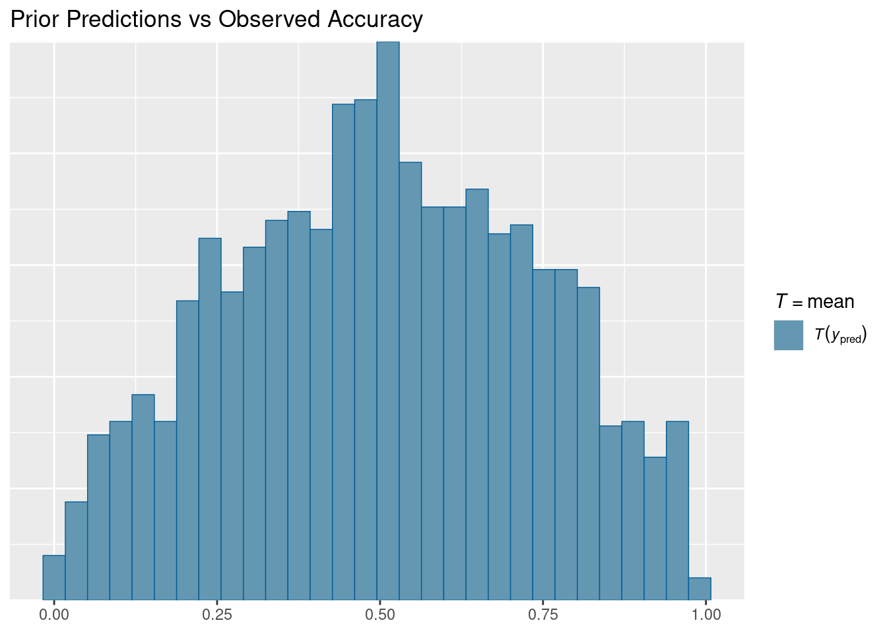
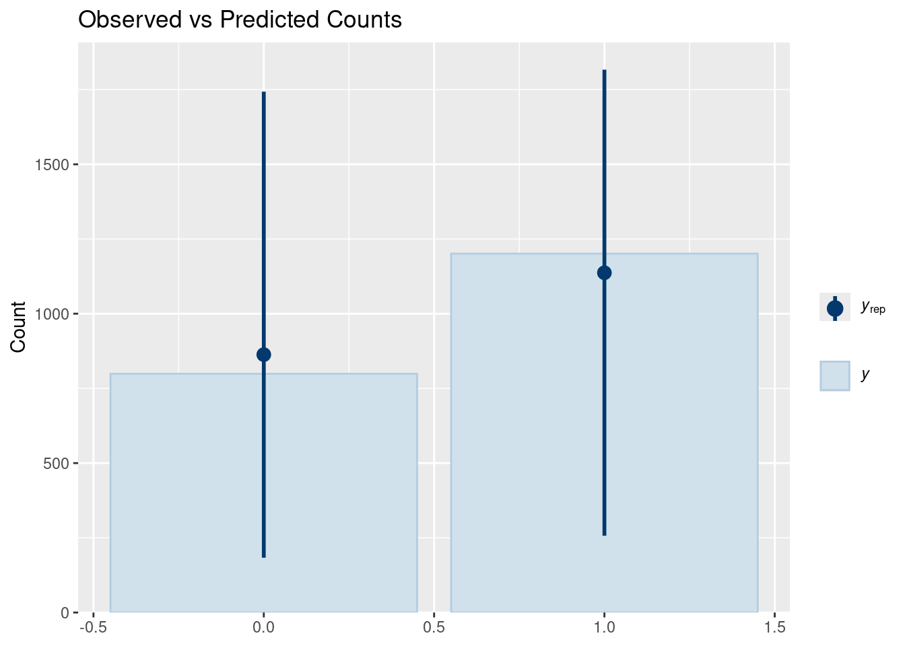
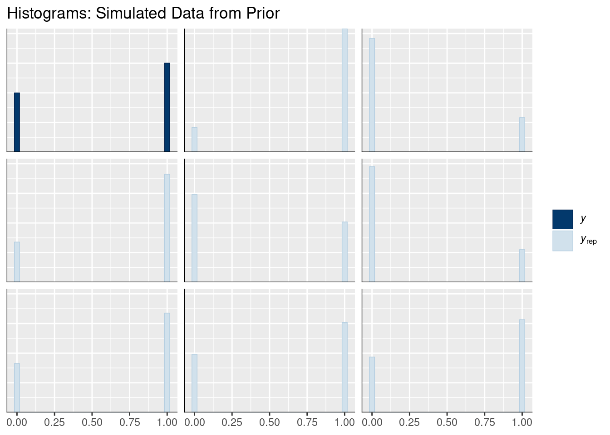
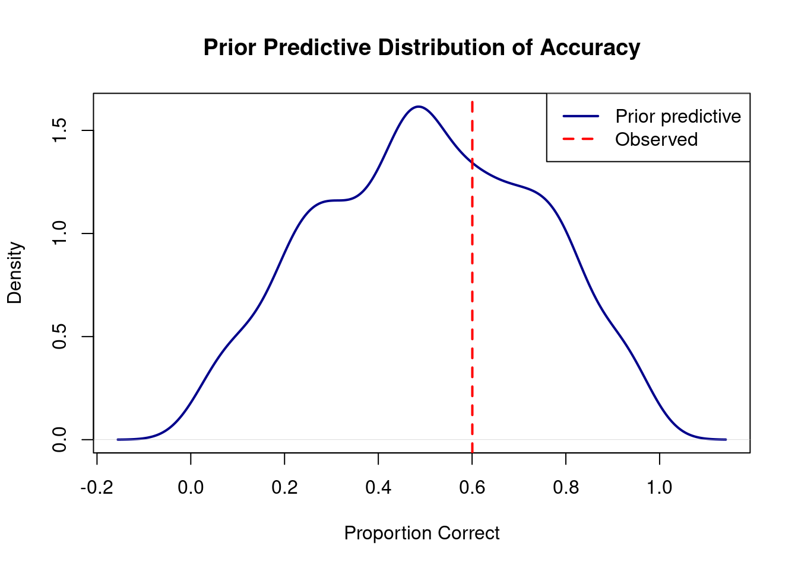
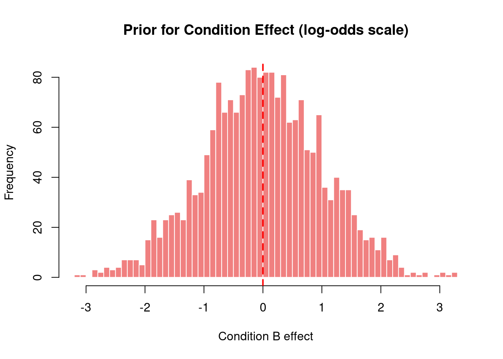

Prior Predictive Checks: Grammaticality Judgment Example
Bayesian Mixed Effects Models with brms for Linguists
Author
Job Schepens
Published
December 17, 2025
1 Prior Predictive Checks for Binary Data
This document demonstrates how to validate priors for a Bayesian binary model (grammaticality judgments) before fitting to data.
1.1 Setup
Show code
library(brms)library(tidyverse)library(bayesplot)library(posterior) # For as_draws_df() - following Kurz's approach# Create example grammaticality judgment dataset.seed(42)n_subj <-25n_trials <-40n_items <-30gram_data <-expand.grid(trial =1:n_trials,subject =1:n_subj,item =1:n_items) %>%filter(row_number() <= n_subj * n_trials *2) %>%mutate(condition =rep(c("A", "B"), length.out =n()),p_correct =plogis(0.2+ (condition =="B") *0.4),correct =rbinom(n(), size =1, prob = p_correct) )# Define priors for binary modelgram_priors <-c(prior(normal(0, 1.5), class = Intercept),prior(normal(0, 1), class = b),prior(exponential(1), class = sd),prior(lkj(2), class = cor))
1.2 Fitting Prior Only Model
Show code
# Create fits directory if it doesn't existif (!dir.exists("fits")) dir.create("fits")# Fit model with priors only# Using file argument to cache the fitted model and speed up re-runsprior_pred_gram <-brm( correct ~ condition + (1+ condition | subject) + (1| item),data = gram_data, family =bernoulli(),prior = gram_priors,sample_prior ="only",chains =4, iter =1000, # 4 chains, fewer iterations for prior checkscores =4, # Use 4 cores for parallel samplingverbose =FALSE,refresh =0,file ="fits/prior_pred_gram", # Cache model - only refits if data/formula/priors changefile_refit ="on_change"# Only refit when necessary)
1.3 Prior Predictive Checks
1.3.1 Visual Checks
Show code
# Mean comparison (proportion correct)pp_check(prior_pred_gram, type ="stat", stat ="mean", prefix ="ppd") +labs(title ="Prior Predictions vs Observed Accuracy")

Show code
# Bar plotpp_check(prior_pred_gram, type ="bars", ndraws =100) +labs(title ="Observed vs Predicted Counts")

Show code
# Histogram of simulated datasetspp_check(prior_pred_gram, type ="hist", ndraws =8) +labs(title ="Histograms: Simulated Data from Prior")

1.3.2 Prior Predictive Accuracy Distribution
Show code
prior_pred_samples <-posterior_predict(prior_pred_gram, ndraws =1000)obs_acc <-mean(gram_data$correct)pred_acc <-apply(prior_pred_samples, 1, mean)plot(density(pred_acc), main ="Prior Predictive Distribution of Accuracy",xlab ="Proportion Correct",lwd =2, col ="darkblue")abline(v = obs_acc, col ="red", lwd =2, lty =2)legend("topright", c("Prior predictive", "Observed"), col =c("darkblue", "red"), lwd =2, lty =c(1, 2))

1.4 Prior Distributions
Following Kurz’s approach, we extract prior samples using as_draws_df() from the posterior package.
Show code
# Extract prior draws as a data frame (Kurz's method)# This works seamlessly with tidyverse and gives us a proper data frameprior_samples <-as_draws_df(prior_pred_gram)
1.4.1 Intercept Prior
Show code
# Now we can access columns directly from the data frameintercept_vals <- prior_samples$b_Interceptcat("Intercept prior (log-odds scale):\n")
# Visualizationhist(effect_vals, main ="Prior for Condition Effect (log-odds scale)",xlab ="Condition B effect",breaks =50, col ="lightcoral", border ="white")abline(v =0, col ="red", lwd =2, lty =2)

1.5 Random Effects Distributions
For prior predictive checks, we examine the implied distribution of subject-specific parameters by extracting the hyperprior SDs and simulating random effects.
1.5.1 Subject Random Intercepts
Show code
# Extract hyperprior SDs from prior samplessd_subject_intercept <- prior_samples$sd_subject__Interceptcat("Subject random intercept SD prior:\n")
# Simulate random effects from this priorset.seed(123)n_sims <-1000simulated_intercepts <-rnorm(n_sims, mean =0, sd =median(sd_subject_intercept))cat("\nImplied subject random intercepts (log-odds scale):\n")
Implied subject random intercepts (log-odds scale):
# Combine with typical intercept value from priorintercept_median <-median(intercept_vals)subject_prob <-plogis(intercept_median + subject_int)print(subject_prob)
# Simulate random slope effectssimulated_slopes <-rnorm(n_sims, mean =0, sd =median(sd_subject_slope))cat("\nImplied subject random slopes (log-odds scale):\n")
✓ Condition effect varies but is typically moderate
✓ Between-subject accuracy ranges 30-70% or similar
✓ No impossible values (all between 0 and 1)
1.6.2 Problems to Watch For
✗ Mean accuracy >> 90%: intercept prior too high
✗ All subjects 50% ± 1%: intercept SD too small
✗ Very weak prior predictions: slopes prior too small
1.7 Summary
Before fitting your model to actual data, always validate that your priors: 1. Generate reasonable predictions for your domain 2. Allow sufficient flexibility for the data to inform the posterior 3. Respect constraints (e.g., 0-1 for probabilities) 4. Account for variation across subjects/items